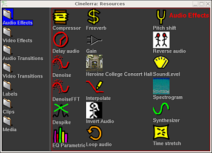

| [ << ] | [ >> ] | [Top] | [Contents] | [Index] | [ ? ] |
Effects, transitions, clips, and assets are accessed here. Most of the resources are inserted into the project by dragging them out of the resource window. Management of resource allocation is also performed here.
The resource window is divided into two areas. One area lists folders and another area lists folder contents. Going into the folder list and clicking on a folder updates the contents area with the contents of that folder.

The resources window
The folder and contents can be displayed as icons or text.
Right clicking in the folder or contents area brings up a menu containing formatting options. Select Display text to display a text listing. Select Sort items to sort the contents of the folder alphabetically.
The asset info window displays detailed information about the selected media file. To access it, go to the asset manager folder and right click on the label or icon of the file you are interested on. An asset menu will appear, then click on Info.
The asset info window
| [ << ] | [ >> ] | [Top] | [Contents] | [Index] | [ ? ] |
This document was generated on February, 4 2016 using texi2html 1.76.